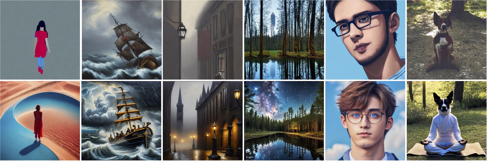

BitsFusion: 1.99 bits Weight Quantization of Diffusion Model
1Snap Inc.
2Rutgers University
NeurIPS 2024
BitsFusion compresses the UNet of Stable Diffusion v1.5 (1.72 GB, FP16) into 1.99 bits (219 MB), achieving a 7.9X compression ratio and even better performance.
Top: Images generated from full-precision Stable Diffusion v1.5. Bottom: Images generated from BitsFusion, where the weights of UNet are quantized into 1.99 bits, achieving 7.9X smaller storage than the one from Stable Diffusion v1.5. All the images are synthesized under the setting of using PNDM sampler with 50 sampling steps and random seed as 1024.
Abstract
Diffusion-based image generation models have achieved great success in recent years by showing the capability of synthesizing high-quality content. However, these models contain a huge number of parameters, resulting in a significantly large model size. Saving and transferring them is a major bottleneck for various applications, especially those running on resource-constrained devices. In this work, we develop a novel weight quantization method that quantizes the UNet from Stable Diffusion v1.5 to 1.99 bits, achieving a model with 7.9X smaller size while exhibiting even better generation quality than the original one. Our approach includes several novel techniques, such as assigning optimal bits to each layer, initializing the quantized model for better performance, and improving the training strategy to dramatically reduce quantization error. Furthermore, we extensively evaluate our quantized model across various benchmark datasets and through human evaluation to demonstrate its superior generation quality.
Presentation Video
Overview of Training and Inference Pipeline
Left: We analyze the quantization error for each layer in SD-v1.5 and derive the mixed-precision recipe to assign different bit widths to different layers. We then initialize the quantized UNet by adding a balance integer, pre-computing and caching the time embedding, and alternately optimizing the scaling factor.
Middle: During the Stage-I training, we freeze the teacher model (i.e., SD-v1.5) and optimize the quantized UNet through CFG-aware quantization distillation and feature distillation losses, along with sampling time steps by considering quantization errors. During the Stage-II training, we fine-tune the previous model with the noise prediction.
Right: For the inference stage, using the pre-cached time features, our model processes text prompts and generates high-quality images.
Benchmark Comparisons
Comparison between our 1.99-bits model vs. SD-v1.5 on various evaluation metrics with CFG scales ranging from 2.5 to 9.5.
Human Evaluation
Human evaluation comparisons between SD-v1.5 and BitsFusion. BitsFusion is favored 54.41% of the time over SD-v1.5.
More Comparisons
Hover the cursor on the images to reveal the prompts.

Top: full-precision Stable Diffusion v1.5. Bottom: 1.99 bits BitsFusion.
Top: full-precision Stable Diffusion v1.5. Bottom: 1.99 bits BitsFusion.
Top: full-precision Stable Diffusion v1.5. Bottom: 1.99 bits BitsFusion.
Top: full-precision Stable Diffusion v1.5. Bottom: 1.99 bits BitsFusion.
Top: full-precision Stable Diffusion v1.5. Bottom: 1.99 bits BitsFusion.
Top: full-precision Stable Diffusion v1.5. Bottom: 1.99 bits BitsFusion.
Top: full-precision Stable Diffusion v1.5. Bottom: 1.99 bits BitsFusion.